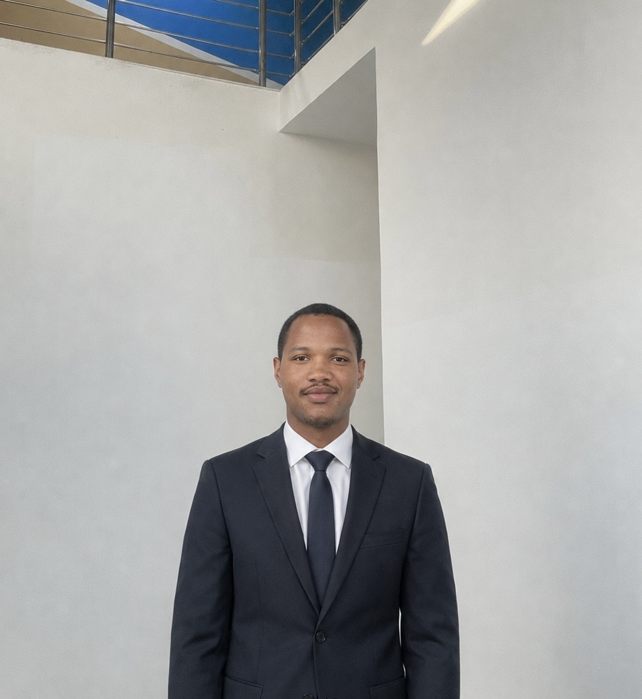

I build spatial intelligence systems — WebGIS platforms, real-time satellite data pipelines, and offline-first field tools — for governments, international agencies, and NGOs across West Africa. Co-founder of Naviss Technologies, Abuja.

A geospatial intelligence platform I independently conceived and built — transforming dispersed oil & gas asset data into a unified mapping system with real-time spatial visibility and NDVI-based anomaly detection.
Multi-country open geospatial data portal serving 56+ spatial datasets across Nigeria, Ghana, Mali, Benin, Burkina Faso, and Côte d'Ivoire — built for the African Union Commission.
Real-time air quality platform fusing NASRDA satellite data with ground sensor networks across 4 cities — live AQI readings, predictive modelling, and health-impact assessments.
Four-component land registration platform: WebGIS parcel database with spatial conflict detection, automated survey workflows, institutional email infrastructure, and capacity-building programme.
Offline-capable mobile case management system for IDP registration across 3 states. Background sync ensures field teams always operate on live data with zero connectivity.
GIS dashboard tracking Health, Power, Water, and Road infrastructure across all 16 LGAs of Kwara State. GPS field survey data feeds real-time status updates with polygon-based spatial filtering, heatmap/choropleth visualisation, and a mobile-responsive interface for field officers.
I'm a geospatial software engineer and co-founder of Naviss Technologies, a spatial intelligence startup based in Abuja, Nigeria. I build systems that make location data genuinely useful — from the database layer to the map on screen.
My work has spanned open data portals for the African Union Commission, satellite-fused air quality monitoring for NASRDA, land registration systems for Kwara State government, and offline IDP tracking tools for humanitarian operations in North-East Nigeria.
I hold a BSc in Geoinformatics from the University of Ilorin (2024), where I also consulted on spatial data infrastructure. I care about systems that get used — built clean, documented properly, deployed in the real world.
Open to GIS development projects, consulting engagements, and full-time roles. Based in Abuja — working with clients globally.